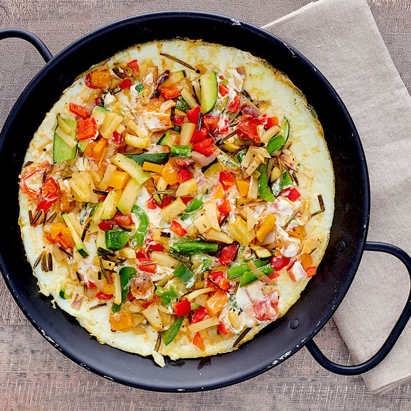

Scrumbled eggs

Description
A great morning dish. Fast and easy to cook. Also has plenty of protein
and fibers to jump start your body.
Preparation time: 1-2 minutes
Cooking time: 10 minutes
Ingredients
- 4 eggs
- ~40 grams of onions
- ~100 grams of any vegetables
- half a tablespoon of olive oil (any other oil will do)
Steps
- Heat up some olive oil
- Put in some onions
- As onions have started browning, throw in some veggies
- When veggies are soft, scramble the eggs and stir from time to time until it's ready